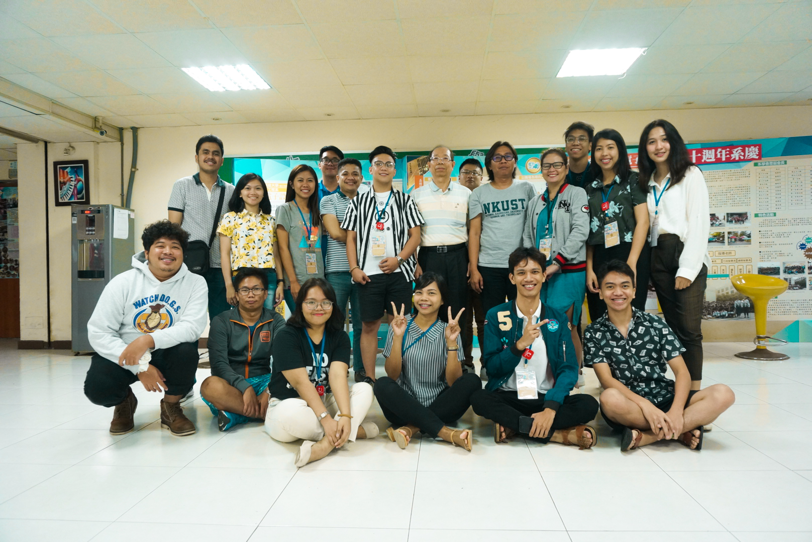
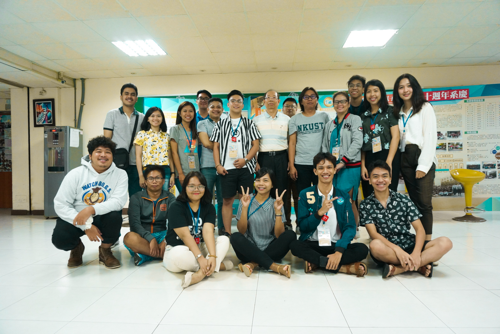
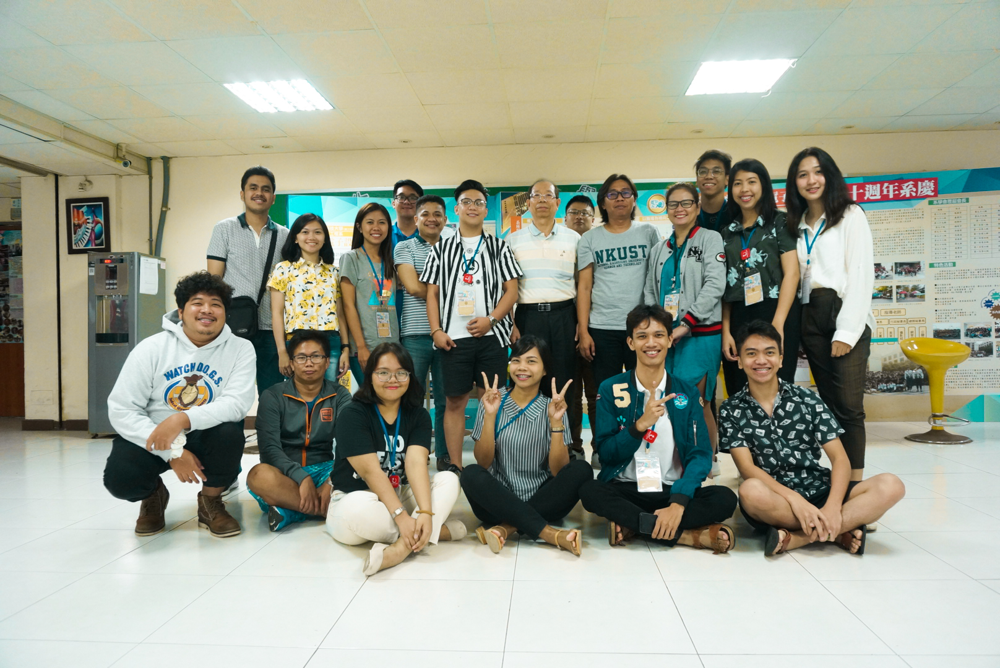

I took my OJT at Kaohsiung, Taiwan through a Work Immersion Program conducted by Jose Rizal University in collaboration with National Kaohsiung University of Science and Technology. We are able to get exposed on certain areas such as machine learning, facial recognition, IOT devices like LORA Technology, we also had an expounded knowledge on the different LED properties, and how it contributes to the development of Taiwan. It was a worthwhile experience for me. To be able to learn courses that could help more professionally ready while engaging with people with different nationalities is amazing.
